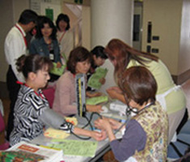

| ■テーマ（○は主な意見・質問、→は答え） |
| 1． |
歯科口腔の学習 |
講師：埼玉県保健医療部健康づくり支援課
（1）口の機能について（2）虫歯はどうしてできるのか（3）歯周病とは（4）虫歯・歯周病の予防 |
| 2． |
血圧、血管年齢、骨密度、尿（塩分、蛋白、潜血等）の健康チェックを行いました。 |
| 検査に協力いただいた医療生協さいたまの方から「生協組合員は普段から食生活など気をつけている人が多いので健康チェックの数値が一般検診よりも良い」とうれしいお話をいただきました。 |
| 3． |
審議事項 |
|  |
（1） |
生協ネットワーク協議会2007年度のまとめと2008年度の活動方針について
2008年度総合テーマは、昨年度に引き続き「広く地域でつながりあうために」と確認されました。予算・決算（案）を提案し、今年度から項目等を変更することを6月の全体会で提案することが確認されました。 |
| （2） |
第53回埼玉母親大会の役割分担について
第9分科会の司会・記録の方3人が決まりました。第7分科会は医療生協さいたまが責任団体となり、運営していただくことになりました。 |
| （3） |
2008年度第1回協議会「スキルアップ応援講座」の学習内容は、不当表示等の学習会・その他となりました。 |
|
|
| 4． |
各単協の取り組みの交流をしました。 |